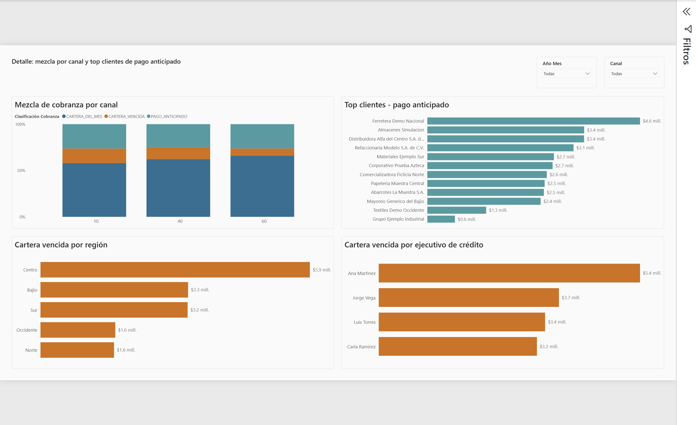

El problema
Antes de este reporte, Crédito y Cobranza no tenía forma repetible de responder una pregunta básica: de todo el dinero cobrado en un mes dado, ¿cuánto estaba realmente presupuestado para ese mes? SAP no registra la relación pago-factura como un vínculo simple 1:1 — un depósito y las facturas que liquida solo se conectan a través de claves de grupo de compensación compartidas — así que responder esto significaba reconciliar factura por factura, a mano, sin una vista consistente en la que nadie pudiera confiar mes tras mes.
La solución
Una vista SQL en el data warehouse subyacente
(gold.vw_pago_factura_simple, ver
Accounts Receivable Medallion Data Warehouse)
reconstruye la relación real pago-factura a partir de los datos de liquidación de SAP,
y clasifica cada peso cobrado como vencido, del mes o
anticipado, comparando la fecha de vencimiento de cada factura contra
su fecha real de pago. El reporte expone esa clasificación con:
- 4 tarjetas KPI siempre visibles (porcentaje, monto y días de pago ponderados)
- Una línea de tendencia mensual
- Desgloses drill-down por canal, cliente, región y analista de crédito, sobre un star schema propio con dimensiones SCD Tipo 2, de forma que la región o el analista histórico de un cliente se mantengan correctos aún después de cambiar, en vez de reescribir la historia en silencio.
El resultado
Lo que antes era una reconciliación manual, factura por factura, ahora es una respuesta de 3 segundos: abrir el reporte y leer la fila superior. Crédito y Cobranza puede ver, para cualquier periodo, exactamente qué porcentaje (y cuántos pesos) de lo que entró era genuinamente esperado ese mes, versus deuda vieja finalmente cobrada, versus dinero que llegó antes de tiempo — y navegar directo a qué facturas, clientes, regiones o analistas explican ese número.
Modelo de datos
Star schema, un hecho y tres dimensiones. Cobranza se relaciona con las
dos dimensiones SCD2 (Cliente Comercial, Cliente Credito) por
llave subrogada, no por ID de cliente directo — la llave subrogada se
resuelve una vez, en el ETL, a la versión de dimensión vigente en la fecha del pago. Una
relación plana por ID de cliente aplicaría la región o el analista actual de un
cliente a todo su historial de transacciones — la misma trampa que el warehouse
subyacente ya sufrió una vez, y que este modelo evita deliberadamente.
Dashboard
Segunda página — Detalle: desglose por canal de venta, top clientes por volumen de pago anticipado, cartera vencida por región, y cartera vencida por analista de crédito.

Notas de diseño
- El layout usa una cuadrícula basada en Fibonacci (márgenes/gutters de 34/21px, alturas de sección de 89/144/233/377px) en vez de espaciados arbitrarios.
- Cada KPI se muestra como porcentaje y como monto — el porcentaje responde "cuánto", el monto lo ancla en dinero real.
- La tendencia mensual consolida lo que originalmente eran dos visuales de series de tiempo superpuestas en una sola, para que el resumen no se convierta en un muro de gráficas.
- El filtro de fecha usa periodos de calendario reales ("Ago 2026", no solo "Agosto"), para que el mismo mes en distintos años no colapse en un solo punto.
Cómo correrlo
No requiere base de datos, cadena de conexión ni credenciales — los datos de ejemplo
(empresas, pagos y facturas ficticias) están embebidos directamente en el modelo como
literales M #table(). Basta con clonar el repositorio y abrir
Comportamiento de Cobranza.pbip en Power BI Desktop: carga de inmediato,
sin ningún paso de configuración.